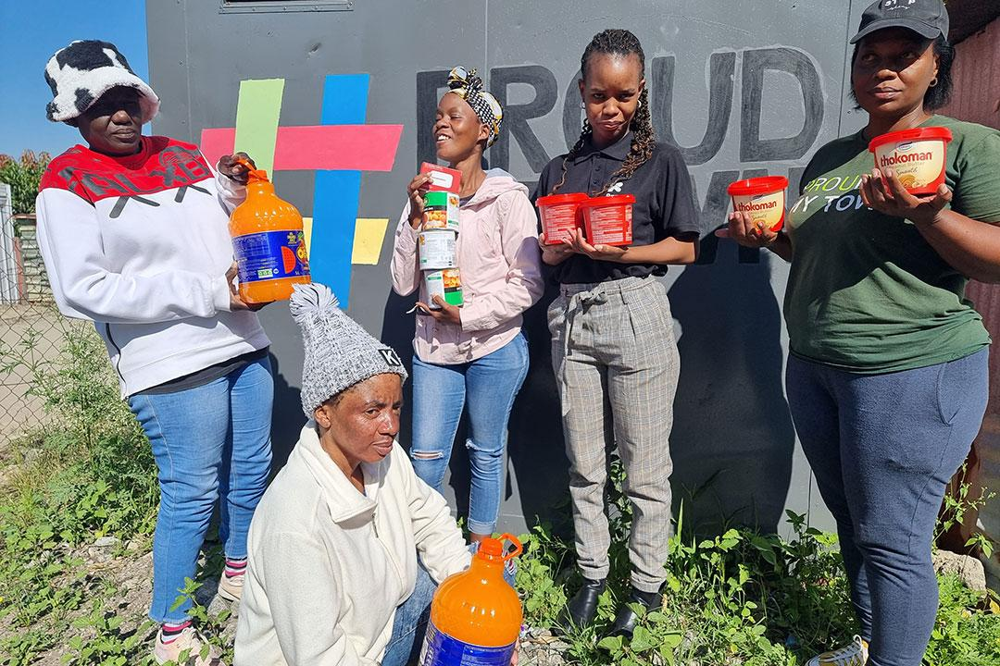
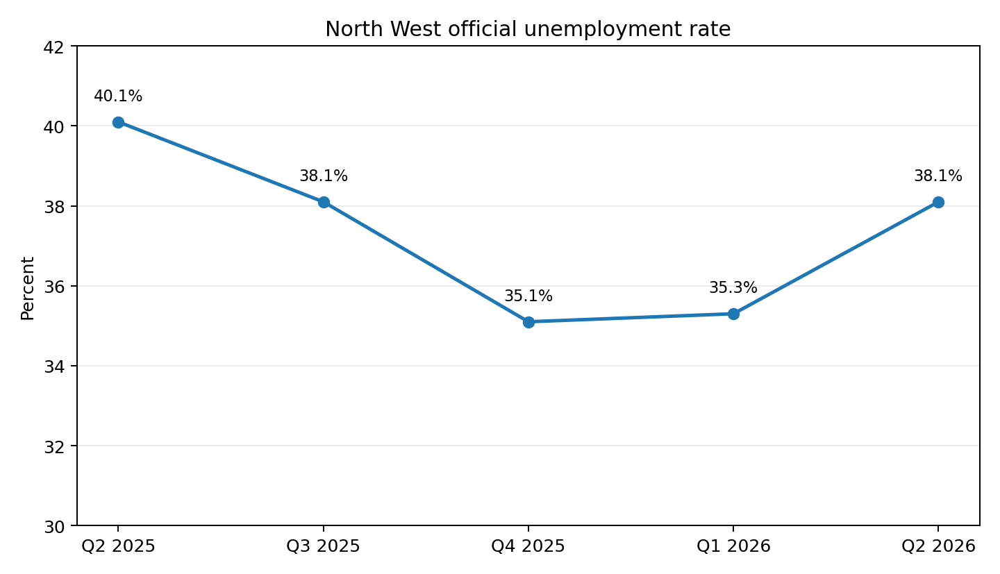

38.1%
North West official unemployment · Q2 2026
Stats SA records a rise from 35.3% in Q1 2026 to 38.1% in Q2 2026.
Rustenburg and Boitekong expose a difficult contradiction: some of the world's most valuable mineral activity exists beside communities facing unemployment, poverty, uneven infrastructure and businesses that struggle to become visible to formal financial systems.
Potchefstroom adds a second contrast: a university and innovation environment exists in the same province. CIAS therefore asks not only whether advanced technology can be built, but whether people have the knowledge, access and financial literacy required to benefit from it.

North West gives CIAS a different research function from Gauteng and the Western Cape. It allows us to study the gap between resource wealth and household opportunity, and between advanced technology and practical access.
Stats SA records a rise from 35.3% in Q1 2026 to 38.1% in Q2 2026.
The wider measure combining unemployment with the potential labour force shows a much deeper level of labour underutilisation.
Stats SA reported that North West employment fell by roughly 15,000 quarter-on-quarter.
Nationally, youth unemployment increased in Q2 2026, making youth exclusion central to the provincial research question.

The official rate moved from 40.1% in Q2 2025 to 35.1% in Q4 2025, before rising again to 38.1% in Q2 2026.
This is important for CIAS: a province can show statistical improvement while households and small businesses remain vulnerable to reversals.
Rustenburg's economy is strongly shaped by platinum-group-metal mining and the businesses and migration patterns surrounding it.
Historic research on the city described how the mining boom produced winners and losers, with gated residential development and mining-linked wealth existing alongside rapidly growing settlements such as Boitekong.
That historical material is older than the three-year window, so it should be treated as timeline evidence, not a current statistic.
A household can live near major mines, contractors and retail activity without having the documentation, business networks, skills or financial profile needed to participate in the higher-value parts of that economy.
CIAS should study that gap rather than assume that living near industry improves financial opportunity.
Ranyaka describes Boitekong as a township about 8 km north of Rustenburg with deep Batswana heritage, affected by the consequences of mining, high unemployment and poverty, but also characterised by residents actively working to transform their community.
Recent Boitekong profiles document entrepreneurs working in food, beauty, organic products, branding and design.
The question is therefore not whether enterprise exists; it is what prevents that enterprise from scaling, documenting itself and reaching larger markets.
Community initiatives in Boitekong have supported computer literacy and job-readiness programmes.
This is useful evidence for CIAS because it shows that digital participation cannot be assumed merely because AI or fintech products exist.
A business can have customers, stock movement and community trust yet remain difficult for lenders, insurers, digital platforms or formal suppliers to interpret if its records are incomplete.
North-West University's Entrepreneurship and Innovation Hub, launched in 2025, was designed to turn ideas into businesses and connect young entrepreneurs with mentorship, skills development and markets.
In 2026, NWU described the initiative as moving from vision toward impact.
If advanced knowledge, entrepreneurship support and digital infrastructure are concentrated around institutions, CIAS should ask how easily those capabilities reach township businesses, informal traders, rural entrepreneurs and young people outside university systems.
Stats SA's Q2 2026 labour-force data recorded national unemployment of:
39.2% among people with less than matric,
36.0% among matric holders,
24.0% among those with other tertiary
qualifications,
and 12.4% among graduates.
This does not prove that education alone solves unemployment, but it shows a strong relationship between educational attainment and labour-market outcomes.
Introducing advanced AI into a community without digital literacy, financial literacy, affordable access and practical relevance risks widening an existing divide.
CIAS should therefore study comprehension and usability, not only model accuracy.
| Pressure | What it can look like in Rustenburg / Boitekong | Why CIAS cares | What we must not assume |
|---|---|---|---|
| High unemployment | Small local demand, income volatility, many job seekers and side businesses. | Irregular income may still contain recurring patterns. | Unemployment does not mean financial irresponsibility. |
| Mining dependence | Local spending and contracting can be exposed to mining cycles, commodity prices and employment changes. | CIAS must distinguish individual behaviour from industry shocks. | Volatility caused by the local economy is not automatically borrower risk. |
| Weak documentation | Cash sales, handwritten records, informal supplier arrangements and personal/business money mixing. | Financial activity may be real but difficult to interpret. | Missing records are not proof that no business exists. |
| Digital-access gap | Limited devices, data costs, low computer confidence or limited exposure to business software. | An AI system must be understandable and accessible. | Smartphone ownership equals neither digital literacy nor financial literacy. |
| Market access | Local entrepreneurs may struggle to reach corporate customers or larger procurement networks. | Growth signals can be constrained by opportunity, not capability. | Small scale does not automatically imply weak business quality. |
| Financial literacy | Difficulty separating revenue, profit, expenses, working capital, debt and personal consumption. | CIAS research should test whether guidance changes financial behaviour. | Low financial literacy should never become a punitive score. |
CIAS should test whether users can understand the financial concepts being measured and challenge errors.
The research should document device, connectivity, language and digital-literacy constraints before designing AI workflows.
Financial data should help people understand and improve their position, not quietly create another opaque classification system.
| Environment | Observed signal | Possible meaning | Alternative explanation | Bias risk |
|---|---|---|---|---|
| Boitekong micro-enterprise | Repeated cash or digital sales | Economic continuity | Low margins / unstable demand | Overvaluing turnover |
| Mining-linked household | Salary or contractor income with abrupt changes | Formal income capacity | Commodity or contractor cycle | Blaming household for sector shock |
| Youth side business | Small recurring transfers and customer payments | Emerging enterprise | Short trading history | Penalising youth/newness |
| Informal trader | Stock purchases and recurring selling activity | Business continuity | Incomplete records | Digital-document bias |
| Potchefstroom entrepreneur | Training, mentorship, formal accounts | Institutional support | Access advantage | Comparing unlike environments |
What technological and financial infrastructure do micro-enterprises in Rustenburg and Boitekong actually have access to?
How well do business owners understand revenue, profit, working capital, debt, interest and credit records?
How should CIAS distinguish household or business instability from volatility caused by mining and contractor cycles?
Which real business activities remain invisible because they are cash-based or poorly documented?
What support exists around Potchefstroom's institutional ecosystem that is harder to reach in township or informal settings?
What must a user understand before an AI-supported financial tool can be considered informed, useful and fair?
How should financial and AI concepts be communicated so that technical terminology does not itself become an exclusion barrier?
Which data gaps could cause a system to misread poverty, informal housing, location or low digital usage as financial unreliability?
| Source | Use | Status |
|---|---|---|
| Stats SA — QLFS Q2 2026 media release | National unemployment, youth unemployment and North West employment change. | Current primary evidence |
| Stats SA — QLFS Q2 2026 full report | North West official unemployment 38.1%, LU3 56.0% and education-level unemployment. | Current primary evidence |
| Ranyaka — Boitekong | Local place context, poverty/unemployment and community-led transformation. | Current local/context source |
| Ranyaka — Getting Connected in Boitekong | Digital literacy and job-readiness context. | Recent local evidence |
| Sunday World — North West unemployment | Recent timeline context for provincial unemployment. | Recent secondary source |
| South African Labour Bulletin — Gated Rustenburg | Historical mining-boom, spatial inequality and Boitekong context. | Historical timeline source |
| NWU — Entrepreneurship and Innovation Hub | Potchefstroom entrepreneurship and institutional-support contrast. | Current primary institutional source |
| Stats SA — South Africa's Informal Economy | National informal-business context and documentation/education challenges. | Recent primary evidence |